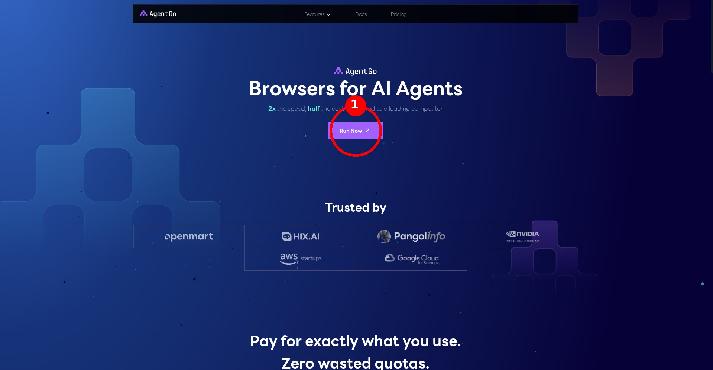
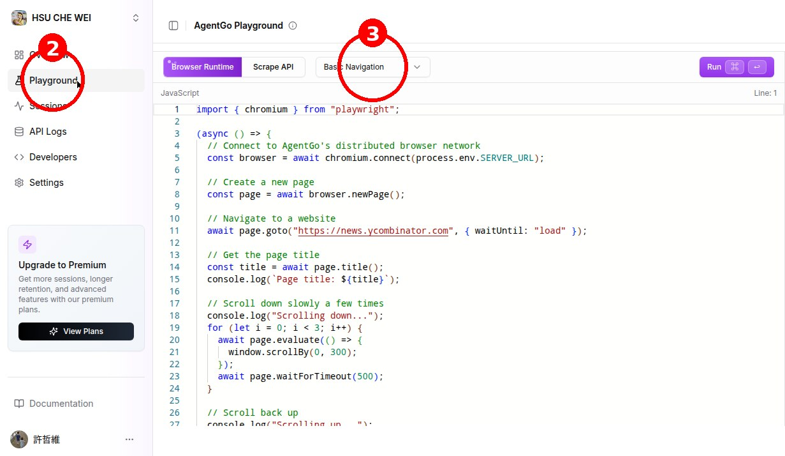

Meta 推出的個人 AI 助理 Muse 目前只開放部分地區，台灣會被擋。
這個方法不用 VPN，透過乾淨的遠端瀏覽器就能繞過地區限制。
加入 Muse 後 48 小時內，到「設定」輸入邀請碼，
我們雙方都能獲得免費 token！
Muse 目前只在美國、加拿大等地區開放。它擋的是「地區＋瀏覽器指紋」——也就是說，只要用一個位於開放地區的乾淨瀏覽器，就能正常註冊，完全不需要 VPN。
方法是使用 AgentGo（agentgo.live）的遠端瀏覽器服務：它提供一台位於開放地區的雲端瀏覽器讓你操作，Muse 會以為你是從開放地區連線的。
前往 agentgo.live，註冊一個帳號並登入。這是提供遠端瀏覽器的服務平台，註冊過程跟一般網站一樣，填信箱、設密碼即可。

登入後，在左側選單點擊 Playground（遊樂場／試用區）。這裡有各種預設好的瀏覽器腳本可以直接使用。

在 Playground 頁面上方，找到腳本下拉選單（預設顯示「Basic Navigation」），點開後選擇 Muse.ai (30 min)，它在選單最下方。
執行後，AgentGo 會為你啟動一台位於開放地區的乾淨瀏覽器。稍等片刻，瀏覽器畫面就會出現在你的螢幕上。
遠端瀏覽器啟動後，在網址列輸入 muse.ai 並前往。你會看到 Muse 的註冊／登入頁面——這次不會再出現地區限制的錯誤了！
照畫面指示完成註冊：
註冊完成後，你會看到 Muse 的聊天介面。從這一刻起，你就可以關掉 AgentGo，直接用自己的瀏覽器登入 muse.ai 使用了，不需要每次都經過遠端瀏覽器。
加入後 48 小時內，到 Muse 的「設定」找到邀請碼兌換入口，輸入：
A：不用。這個方法完全不需要 VPN，是用位於開放地區的遠端瀏覽器來註冊。
A：不用。註冊成功後，直接用自己的瀏覽器登入 muse.ai 即可正常使用。
A：Muse.ai 的 30 分鐘腳本通常有免費額度，註冊一個帳號用來完成 Muse 註冊是夠的。詳細方案以 AgentGo 官網為準。
A：邀請碼必須在加入 Muse 後 48 小時內兌換。如果錯過了，可以聯繫邀請人看看是否有新的邀請方式。
A：Muse 是 Meta 推出的個人 AI 助理，不只是聊天機器人。它可以連接你的 Gmail、日曆、試算表，自動整理信件、排行程、上網查資料，有自己的電腦在背景幫你工作，越用越懂你。
記得：加入後 48 小時內到設定輸入邀請碼